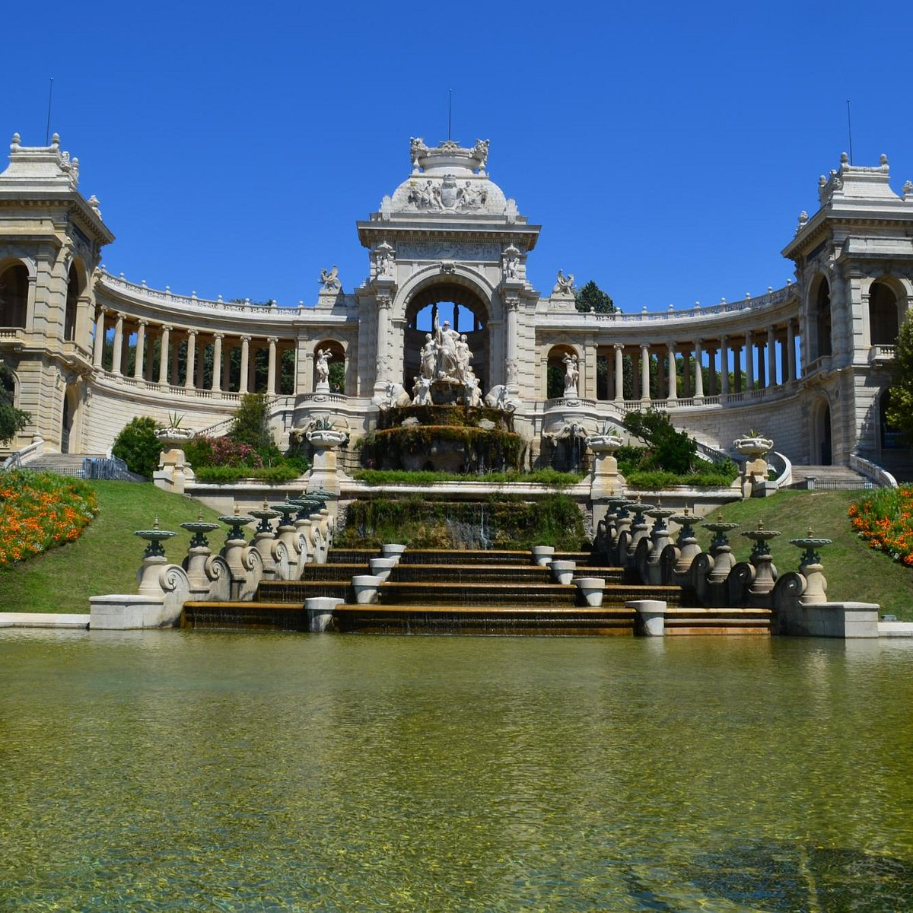

le palais longchamp
Le Palais Longchamp est un incontournable à Marseille : avec son magnifique
parc, ce monument historique construit pour amener l’eau dans la ville est une
véritable prouesse architecturale.
En 1835, une épidémie de choléra frappa la cité phocéenne en raison du
manque d’eau. C’est après ce drame, que l’ingénieur des Ponts et Chaussées
Franz Mayor de Montricher réalisa un projet datant du XVIème siècle. Il
s’agissait de creuser un canal de 85 kilomètres, destiné à amener l’eau la
Durance jusqu’à Marseille.